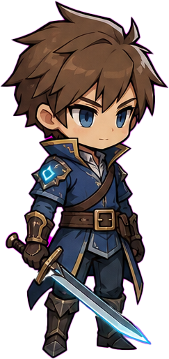
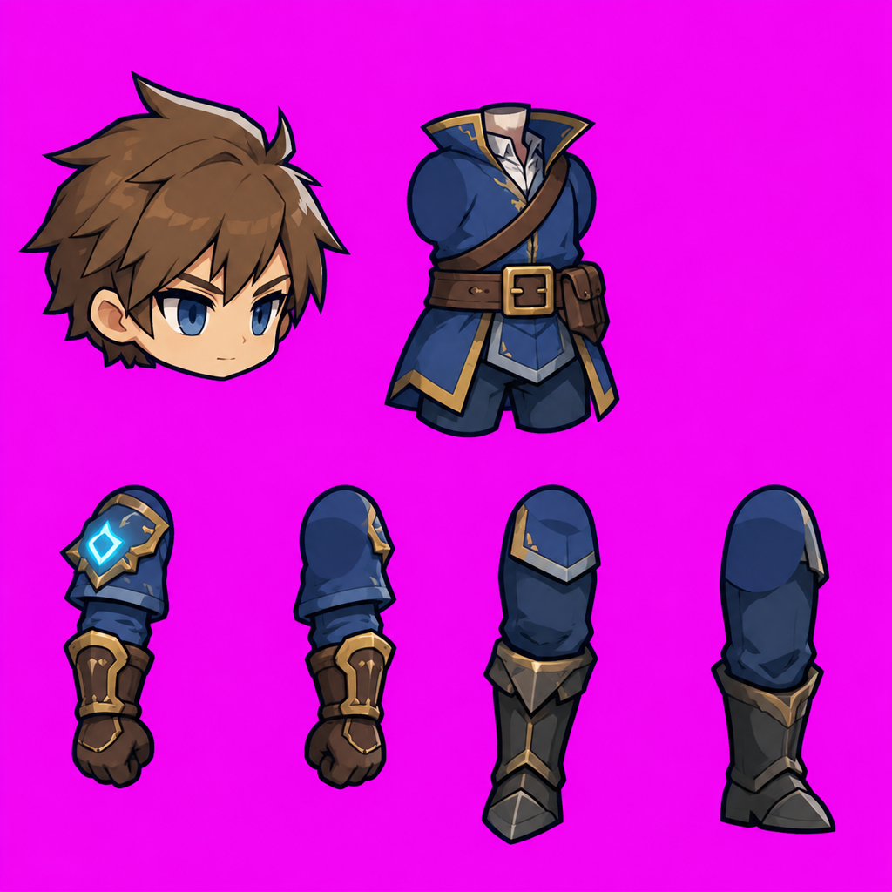
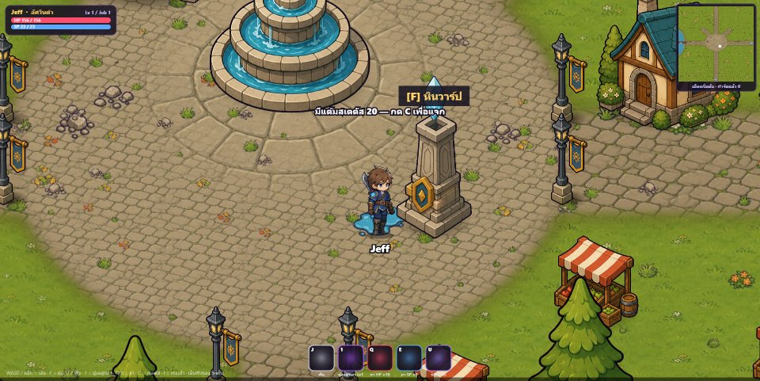

คู่มือ prompt เจนภาพทั้งเกม — ตัวละคร · ภาพจากที่อื่น→สไตล์เรา · ชิ้นส่วน rig · ชุด/คลาส · หมวก · อาวุธ · เอฟเฟคอาวุธ · ไอเทม · มอนสเตอร์ · VFX · แมพ
สตูดิโอ: สอน AI · เกม: Re-Ask · STYLE LOCK v2 (ล็อก 2026-10-16)
อธิบายภาษาไทย · prompt ภาษาอังกฤษ (คัดลอกทั้งกล่อง)
| 0 | วิธีใช้ + STYLE LOCK v2 + ภาพอ้างอิงที่ต้องแนบ |
| 1 | สร้างตัวละครใหม่ (S1 เทียบสไตล์ → S2 ทดสอบในฉาก → S3 ครอบครัว) |
| 2 | ⭐ ใช้ภาพที่ชอบจากที่อื่น → แปลงเป็นสไตล์เรา → แยกชิ้น (R1–R3) |
| 3 | ชีทชิ้นส่วน C2 v2 + ทริคขาหน้า + กับดักที่เคยเจอ |
| 4 | ชุด / คลาส บนแม่แบบ hero2 |
| 5 | หมวก / ทรงผม |
| 6 | อาวุธ |
| 7 | เอฟเฟคอาวุธ (ชั้นเรือง · ธาตุ · รอยฟัน) |
| 8 | ไอเทม / อุปกรณ์ (ไอคอน) |
| 9 | มอนสเตอร์ (ตระกูล · ร่าง rig หรือ sprite · บอส) |
| 10 | VFX สกิล |
| 11 | แมพ (ล็อกสไตล์เมือง · ภาพรวม · ชุดของ · พื้น) |
| A | ภาคผนวก: ชื่อไฟล์ + สิ่งที่ผมทำต่อหลังได้ภาพ |
ขั้นตอนทุกงาน: คัดลอก prompt → แทน [STYLE LOCK] ด้วยบล็อกด้านล่าง → แนบภาพอ้างอิงตามที่บอก → เจน 2–4 ภาพ เลือกที่ผ่านเช็คลิสต์ → วางไฟล์ไว้ที่โฟลเดอร์ สอน AI แล้วบอกว่าเป็นอะไร
กฎทอง: ภาพอ้างอิงสำคัญกว่าตัวหนังสือ · ห้ามแก้บล็อกล็อกสไตล์ทีละ prompt (แก้ที่เดียวใช้ทุกงาน) · ภาพไม่ผ่าน = เจนใหม่ ไม่ต้องแก้มือ
| ไฟล์ | ใช้กับ |
|---|---|
| assets/style/char_anchor.png | ทุกงานตัวละคร ชุด มอน อาวุธ ไอเทม |
| assets/style/town_anchor.png / town_overview.png | งานแมพ + ตอนเช็คว่าตัวละครเข้ากับโลก |
| assets/characters/hero2/master_cut.png | ชุดใหม่ / ชิ้นส่วน (ล็อกสัดส่วน) |

STYLE LOCK v2: - Art: 2D chibi HD game art, anime-style face, same style as the attached reference character. - Proportions: about 2.7 heads tall, big head, large expressive eyes with one white highlight, small nose and mouth. - Outline: dark navy #1b1830, even 3px on the outer silhouette, thinner 1.5px on inner lines. - Shading: flat cel shading, 1 base + 2 shadow tones + 1 hard highlight, no soft gradients, no texture noise. - Light: single light from TOP-LEFT, rim highlight on the top/left edges. - View: 3/4 view facing right, full body, feet flat on an invisible ground line. - Palette: slightly desaturated medieval colors (navy, leather brown, steel, warm gold trims); only ONE glowing accent per character (e.g. cyan rune or blade edge). - Detail level: readable at 120px tall; medium detail on clothes, no tiny patterns. - Background: flat pure magenta #FF00FF, no ground shadow, no text, no magenta on the character.
ใช้เมื่อยังไม่มีหน้าตาในใจ · ลำดับ S1 → S2 → S3 → ล็อก → ไปบท 3 (ชิ้นส่วน)
Character style exploration sheet for a 2D fantasy MMORPG, 3x2 grid, the SAME young adventurer (short messy brown hair, blue tunic, leather belt and boots, short sword) drawn in 6 different chibi art styles, full body, 3/4 view facing right, standing idle pose, each on a flat pure magenta (#FF00FF) background: 1 bright heroic chibi, 2.5 heads tall, thick dark navy outline, flat 2-tone cel shading; 2 soft cute chibi, 2 heads tall, rounded shapes, pastel colors, warm brown outline; 3 sharp cool chibi, 3 heads tall, angular shapes, darker palette with one glowing accent; 4 painterly chibi, 2.5 heads tall, thin outline, soft painted shading like a storybook; 5 bold comic chibi, 2.5 heads tall, very thick outline, flat colors, strong silhouette; 6 premium fantasy chibi, 3 heads tall, ornate gold trims, glossy highlights, rich jewel colors. Same character design, pose and size in all 6, so only the art style differs. Number each style small under it. Light from top-left in all. Must fit the cozy medieval town in the reference image.
The chosen character from the reference (style #N) standing in the town plaza from the second reference, next to the fountain and a shop door, same 3/4 top-down camera. The door must be as tall as the character. Check: outline weight, shading and colors of the character match the buildings.
Character lineup in the exact art style of the reference character, 4x2 grid, each full body on flat pure magenta (#FF00FF), same 3/4 view facing right, same outline, shading and light from top-left, sizes relative to each other: 1 the hero (reference), 2 friendly shopkeeper NPC with apron, 3 old guild master NPC with staff and robe, 4 town guard NPC with spear and helmet, 5 small round slime monster (knee height), 6 forest wolf monster (waist height), 7 mushroom creature monster (knee height), 8 armored goblin miniboss (slightly taller than the hero). Monsters use the same outline and shading rules but simpler shapes and one clear color theme each.
เจอตัวละครที่ชอบจากเกม/อาร์ตที่อื่น → เอามาแค่ ไอเดีย (สีชุด รูปทรง ทรงผม อาวุธ) แล้ววาดใหม่ด้วยสไตล์เรา
Redesign a NEW original character for my 2D MMORPG, inspired by image 1 but drawn exactly in the art style of image 2. From image 1 take only the general idea: [outfit type and colors / silhouette / weapon type / mood]. Change at least 3 details so it is clearly a different character (face, hairstyle, outfit pattern, emblem, accessories). Do NOT copy the face, logos, emblems or exact costume pattern of image 1. Use image 2 for: proportions, face and eyes, outline, shading, light direction, camera angle and detail level. Full body, 3/4 view facing right, standing idle, arms slightly away from the body, legs slightly apart, weapon held low in the front hand. [STYLE LOCK]
Place the two reference characters side by side on a flat pure magenta background, same scale, same ground line, both 3/4 view facing right. Do not change either design. The new character must have the same head size, outline weight and shading as the other one.
แนบภาพจาก R1 แล้วใช้ prompt C2 v2 ในบท 3 ได้เลย (ชีทเดียว 6 ชิ้น)
Character parts sheet for 2D skeletal animation, based on the reference character, flat pure magenta background (#FF00FF), exactly 6 separate pieces in 2 rows with wide gaps, same scale for all pieces as in the reference (do NOT enlarge any piece): row 1: 1 head with all hair, no neck; 2 torso: neck stub on top, collar, cape/scarf, belt and pouch, and the top of the shorts/hips at the bottom, shoulders rounded, NO arms, NO legs. row 2: 3 front arm as ONE piece (rounded sleeve cap at the shoulder -> forearm -> gloved fist), 4 back arm (same as 3), 5 front leg as ONE piece (rounded pants top -> knee -> boot), 6 back leg (same as 5). Every limb hangs straight down, joint end on top drawn as a smooth rounded capsule so it hides under the torso. Shoulder armor or pads belong to the ARM piece only (not drawn on the torso). No mannequin pegs, no sockets, no gray stubs. Arms and legs as wide as in the reference. Simple shapes, thick outline, readable at small size. [STYLE LOCK]

4 versions of the same FRONT LEG piece of the reference character in one row on flat pure magenta (#FF00FF), identical thigh, knee and shin size and position in all 4; ONLY the boot tip direction changes: 1 toe turned slightly toward the viewer, 2 toe turned halfway, 3 toe pointing straight at the viewer, 4 toe pointing outward to the left. Same scale, outline and colors as the reference. [STYLE LOCK]
ยืน = แบบ 3 (มั่นใจสุด) · เดิน/วิ่ง = บูทหันข้าง (ไปทางที่เดิน) → เกมสลับให้เอง
| อาการ | แก้ใน prompt |
|---|---|
| หมุดเทาบนหัวชิ้น (หุ่นโชว์) | no mannequin pegs, no gray stubs |
| เกราะไหล่ซ้ำบนลำตัวและแขน → ทะลุตอนยกแขน | shoulder pads belong to the ARM piece only |
| ชิ้นขนาดไม่เท่ากัน (แข้งใหญ่เท่าหัว) | same scale for all pieces, do NOT enlarge any piece |
| แขนขาผอมกว่าภาพเต็ม | arms and legs as wide as in the reference |
ชุดใหม่ = ชีท C2 v2 แผ่นเดียว · ท่าทุกท่าใช้ร่วมกัน · แนบ hero2 master_cut.png + parts_sheet_v2.png เพื่อให้ข้อต่อตรงเป๊ะ
Character parts sheet in EXACTLY the same layout, piece sizes and joint positions as the reference parts sheet, same body and head as the reference character, only the OUTFIT changes to: [OUTFIT]. 6 pieces: head (new hair or helmet allowed), torso, front arm, back arm, front leg, back leg — each limb ONE piece, rounded capsule joint ends, no pegs, pads on the arm pieces only. Flat pure magenta background (#FF00FF). [STYLE LOCK]
| คลาส | [OUTFIT] | อาวุธ / สี FX |
|---|---|---|
| นักดาบ (hero2) | — | ดาบมือเดียว · ฟ้า |
| อัศวิน | heavy silver plate armor with gold trims, short red cape, tall armored boots | ดาบใหญ่+โล่ · ทอง |
| นักเวท | long deep-purple robe with star embroidery, wide sleeves, rope belt, soft leather shoes | คทา · ม่วง |
| นักธนู | green leather hunter outfit, short hooded cloak, arm guards, quiver strap across the chest | ธนู · เขียว |
| โจร | dark fitted leather, face scarf, many small belts and pouches, soft boots | มีดสั้นคู่ · แดง |
| นักบวช | white and gold priest robe, short mantle, holy symbol on the chest | คทาสั้น · ขาวทอง |
Two versions of the same [HELMET] for the reference character's head, side by side on flat pure magenta (#FF00FF): 1 open (face visible, worn on the reference head size), 2 closed visor. Same size and position in both. Draw only the helmet, no head, no hair. 3/4 view facing right. [STYLE LOCK]
6 hairstyles for the same reference head (same face, same size and position), 3x2 grid on flat pure magenta (#FF00FF): 1 short spiky, 2 long ponytail, 3 bob cut, 4 messy medium, 5 shaved sides with top knot, 6 long wavy. Each drawn as a full head piece, no neck. Keep the face identical. [STYLE LOCK]
8 cosmetic hats sized for the reference head, 4x2 grid on flat pure magenta (#FF00FF), only the hats: straw hat, wizard hat, knitted beanie, feathered cap, flower crown, cat-ear hood, pirate tricorn, fruit-shaped cap. Same 3/4 angle facing right, same scale, simple readable shapes. [STYLE LOCK]
กติกาที่ rig ต้องการ: ใบ/หัวอาวุธชี้ขึ้นบน ด้ามอยู่ล่าง ตรงแนวตั้ง · มือจับที่ ~82% จากบน · อาวุธแต่ละชิ้นแยกช่อง
6 weapons for the reference chibi character, 3x2 grid on flat pure magenta (#FF00FF), each standing perfectly vertical, blade or head pointing UP, handle at the bottom, sized relative to the character (sword about 0.8x character height): 1 one-handed sword, 2 two-handed greatsword, 3 magic staff with crystal top, 4 wooden longbow (string on the right), 5 pair of daggers side by side, 6 round shield (front view slightly angled). Glowing parts (runes, crystals, blade edge) drawn in one accent color only. [STYLE LOCK]
The same [WEAPON] in 6 upgrade tiers, one row on flat pure magenta (#FF00FF), identical size, angle and handle position: 1 rusty iron, 2 clean steel, 3 steel with gold trim, 4 silver with blue runes, 5 ornate with glowing crystal, 6 legendary with flowing energy edge. Each tier keeps the same silhouette, only materials and decorations grow. [STYLE LOCK]
หลัก 6: แยกชั้นแสงออกจากภาพ → เกมซ้อนแสงแบบ additive + bloom + เต้นตามจังหวะ / ตอนฟันแรงขึ้น
Glow layer only for the reference weapon: same size and position, pure black background, draw ONLY the parts that emit light (runes, crystal, blade edge) in bright [cyan], everything else black. No outline, no shading, no other colors.
The same reference weapon in 4 elemental versions, one row on flat pure magenta (#FF00FF), identical size and angle: 1 fire (cracked lava lines, orange glow), 2 ice (frosted blade, pale cyan crystals), 3 lightning (yellow-white arcs in grooves), 4 shadow (black smoky blade, violet rim). Effects stay attached to the weapon, short and readable, no big particles. [STYLE LOCK]
2D game VFX sprite sheet, 3 columns x 2 rows, 6 frames, equal square cells, pure black background, same scale in every frame, slash centered in each cell. A [cyan] crescent sword slash: 1 thin white line starts, 2 crescent sweeps with white-hot core, 3 full crescent, 4 brightest with sparks, 5 fades and breaks at the edges, 6 thin afterglow wisps. White core fading to [cyan] then dark edge, anime brush stroke, flat color bands, tapered ends.
6 small hit-impact sparks for a 2D action game, one row on pure black background, each separate: star burst, cross flash, ring shock, shard spray, round puff, comic "pow" shape (no text). White core with [cyan] edges, flat color bands, sharp shapes.
กติกาไอคอน: ทุกช่องขนาดเท่ากัน · วัตถุอยู่กลางช่อง ~75% ของช่อง · มุม 3/4 เล็กน้อย · อ่านออกที่ 48px
16 inventory item icons for a 2D fantasy MMORPG, 4x4 grid of equal square cells on flat pure magenta (#FF00FF), each item centered and filling about 75% of its cell, slight 3/4 angle, thick dark navy outline, flat cel shading, readable at 48 pixels: row 1: red health potion, blue mana potion, green antidote, golden elixir; row 2: bread, roasted meat, apple, cheese; row 3: iron ore, wood log, monster fang, slime jelly; row 4: treasure key, scroll, gold coin pile, gem. [STYLE LOCK]
12 equipment icons, 4x3 grid of equal square cells on flat pure magenta (#FF00FF), centered, same style: leather cap, iron helmet, cloth robe, chain armor, leather gloves, gauntlets, boots, iron greaves, ring, necklace, earring, cape. [STYLE LOCK]
5 empty square item-slot frames in one row on flat pure magenta (#FF00FF), same size, ornate but thin: common (gray), uncommon (green), rare (blue), epic (purple), legendary (gold with small gems). Transparent middle area. [STYLE LOCK]
เลือกวิธีทำตามรูปร่าง:
| รูปร่าง | วิธี | ตัวอย่าง |
|---|---|---|
| คล้ายคน (2 ขา 2 แขน) | ชีทชิ้นส่วน C2 v2 → ใช้ rig + ท่าเดียวกับผู้เล่น | ก็อบลิน โครงกระดูก อัศวินดำ |
| สัตว์ 4 ขา / ไม่มีขา | ชีทชิ้นส่วนแบบมอน (M3) หรือ sprite เฟรม (M4) | หมาป่า หมูป่า สไลม์ หนอน |
| ก้อนเรียบง่าย | ภาพเดียว + โค้ดยืด-หด-เด้ง (squash & stretch) | สไลม์ ผีลอย เห็ด |
กฎมอน: ทุกแมพมีตระกูลเดียวกัน (โทนตรงข้ามสีสกิล หลัก 16) · 1 ตัว = 1 สีหลักชัด · อ่านออกจากเงาดำ · บอสใหญ่ 1.5–2x
Monster family for the [GRASSLAND] map of a 2D MMORPG, 4x2 grid, each full body on flat pure magenta (#FF00FF), 3/4 view facing LEFT (toward the player), sizes relative to a 2.7-head chibi hero: 1-2 tiny cute starter monster in 2 color variants (knee height), 3 small fast monster (knee height), 4 medium monster (waist height), 5 medium tough monster with armor (waist height), 6 ranged/caster monster, 7 elite version of #4 with spikes and glowing eyes, 8 map BOSS (1.8x hero height, crown or horns, strongest silhouette). Same family theme: [green hills, leaves, flowers]. Each monster one clear main color. Simple bold shapes. [STYLE LOCK]
The same reference monster in 4 states, one row on flat pure magenta (#FF00FF), identical size and ground line: 1 idle, 2 attack wind-up (leaning back, mouth open), 3 hit (squashed, eyes closed, white flash look), 4 defeated (flattened, X eyes). 3/4 view facing left. [STYLE LOCK]
Parts sheet for 2D skeletal animation of the reference quadruped monster, flat pure magenta (#FF00FF), wide gaps, same scale as the reference: 1 head (with ears/horns), 2 body (no legs, no tail), 3 tail, 4 front leg near, 5 front leg far, 6 back leg near, 7 back leg far. Each leg ONE piece hanging straight down, joint end on top as a rounded capsule. No pegs. 3/4 view facing left. [STYLE LOCK]
2D game sprite sheet, 4 columns x 2 rows, 8 frames, equal square cells, flat pure magenta (#FF00FF), the SAME [slime] in every frame, same size, bottom of the body on the same ground line in every cell. Frames 1-4: idle bounce loop (squash down, stretch up, back); frames 5-8: hop attack (crouch, leap, land splash, recover). 3/4 view facing left. [STYLE LOCK]
กฎร่วม: กริดตายตัว · จุดยึดเดียวกันทุกเฟรม · ขนาด/สีเดียวกัน · เล่าเรื่องทีละเฟรม (ง้าง → ปะทุ → ค้าง → สลาย) · พื้นดำ (ผมแยกแสงให้)
2D game VFX sprite sheet, 4 columns x 2 rows, 8 frames, each frame in its own equal square cell, pure black background, same scale and palette in every frame, ground line at the bottom of every cell, centered. Animation of [ELEMENT SKILL, e.g. ice spikes erupting from the ground]: 1 faint sign on the ground, 2 sign grows brighter, 3 first shapes break through, 4 halfway, 5 full size with brightest rim and flying bits, 6 hold, 7 breaking apart into dust, 8 only fading marks remain. Main body [dark color], glowing rim [accent color], anime hand-drawn style, flat color bands.
VFX concept sheet for a 2D game, three panels left to right on dark background: [poison bubble shield] around a small chibi character - 1 forming, 2 stable idle state, 3 bursting apart. Anime-style hand-drawn effect, flat color bands, bold shapes, glow only on the brightest edges. 3/4 camera.
A single horizontal color palette strip of exactly 5 flat color swatches for a [poison] magic effect, ordered darkest to lightest, high saturation in the middle swatches, no gradients, no text.
ชุด Dark ที่มีอยู่แล้ว (หนามทมิฬ · อสูรเงา · สแลช X · ระเบิดความว่าง · พายุ) อยู่ใน PROMPT_PACK.md §4.5
ลำดับ: M0 ภาพตั้งต้น → M1 ภาพรวมทั้งแมพ → ชุดของ TK-1~5 → พื้น · แนบ M0+M1 ทุกชีท · ผมส่งเข้า Map Lab (ใบสั่ง+กฎ+seed)
TOWN STYLE LOCK: - Art: 2D hand-painted chibi HD game art, same style as the attached reference images. - Outline: dark navy #1b1830, even 3px weight on outer silhouette, 1.5px on inner lines. - Shading: flat cel shading, exactly 1 base + 2 shadow tones + 1 highlight, no gradients, no texture noise. - Light: single sun from TOP-LEFT, highlights on top/left faces, shadows on bottom/right faces. - Camera: 3/4 top-down, looking down 35 degrees, NO perspective, front faces visible. - Scale: a door is exactly as tall as the 2.7-head chibi hero; a 2-floor building = 2.5 doors tall. - Palette: roofs terracotta #b5543c / slate teal #3f6b73 / moss green #5f7d3a, walls cream #efe1c4 with timber #6b4a32, stone #a39a8c, wood #8a5a36, iron #4a4f5c, foliage #6f9a52 / #4e7a3c, water #4fb3c9, gold #e0b04a. Slightly desaturated, warm. - Windows UNLIT (dark blue glass #2c3a5c), no fire or glow unless asked. - Output: every object separate with wide gaps, flat pure magenta background #FF00FF, no ground shadow, no text.
Full overview of the whole [MAP NAME: e.g. Windy Grassland] map for a 2D MMORPG, wide 3:2 image, entire map visible, same 3/4 top-down 35-degree camera, zoomed out, no perspective. Layout: [main paths, landmarks, water, forest edges, exits to other maps at the edges with a soft blue glow]. Monster areas as open clearings. A small chibi hero in the middle for scale. Use TOWN STYLE LOCK rules but draw a full scene (ignore the magenta rule).
8 environment props for the [MAP NAME] map in a 4x2 grid: [list 8 props: 2 tree types, bush, rock, fence, sign, camp, ruin]. [TOWN STYLE LOCK]
Ground texture sheet for a 2D fantasy MMORPG: a 3x3 grid of 9 separate SQUARE ground swatches, same size, separated by thick pure magenta (#FF00FF) gutters. Each swatch is an independent SEAMLESS TILEABLE texture filling its square, seen from 3/4 top-down 35 degrees, no objects, no shadows, even detail: [9 ground types]. Stones and planks large and readable (about 10-12 stones across a swatch), thin soft outlines, warm colors matching the grass. [TOWN STYLE LOCK] (magenta only in the gutters)

วางไฟล์ที่ได้ไว้ที่โฟลเดอร์ สอน AI (ชื่ออะไรก็ได้) → บอกว่า "เพิ่มให้แล้ว: ชีท C2 v2 ของนักเวท" → ผมย้าย ตั้งชื่อ ตัด และทดสอบ
| ภาพ | ผมทำ | ไปอยู่ที่ |
|---|---|---|
| ชีทชิ้นส่วน C2 v2 | ตัดชมพู · ลบหมุด · split_limbs (ศอก 45% เข่า 47%) · สลับบูท · ตั้งขนาดใน rig | assets/characters/<ชื่อ>/parts |
| อาวุธ / หมวก | ตัด · แยกชั้นเรือง (make_glow) · ตั้งจุดจับ | assets/weapons, assets/helmets |
| ไอคอนไอเทม | ตัดตามกริด · ตั้งชื่อตาม items.json | assets/items → Re-Ask/data/db |
| มอน | rig (คล้ายคน/4 ขา) หรือ sprite เฟรม · ใส่ mobs.json + spawn ในแมพ | assets/monsters |
| VFX ชีทเฟรม | cut_grid · จัดเฟรมให้ตรง · ชั้นเรือง · ใส่สกิล | assets/vfx |
| ชุดของแมพ / พื้น | build_town_kit · normal map · ไฟกลางคืน · Map Lab · ส่งออกเข้าเกม | assets/maps/<แมพ> |